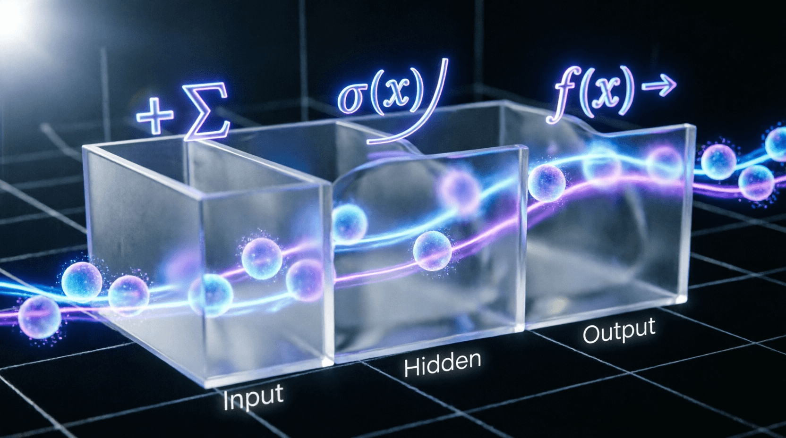

Урок 8: Архитектура Сверточных сетей (CNN)
ML-инженер • Архитектура нейросетей с нуля
Полносвязные слои неэффективны для обработки изображений: они игнорируют пространственные связи между пикселями и требуют колоссального числа параметров. Сверточные нейронные сети (CNN) решают эту проблему за счет двух концепций: локального восприятия (Shared Weights) и инвариантности к сдвигу. На этом уроке мы разберем математику свертки, устройство современных архитектурных блоков и соберем кастомный блок с остаточными связями (Skip-connections).
Ядро свертки (матрица весов небольшого размера, например, 3x3) скользит по входному тензору, вычисляя скалярное произведение на каждом шаге.
В очень глубоких сетях градиенты затухают при обратном проходе через десятки слоев, из-за чего качество обучения падает. Архитектура ResNet решила эту проблему с помощью Skip-connections (остаточных связей): входной сигнал прибавляется к выходу блока слоев, позволяя градиентам течь беспрепятственно напрямую через граф.
import torch
import torch.nn as nn
class ResidualBlock(nn.Module):
def __init__(self, in_channels, out_channels, stride=1):
super().__init__()
# Первая свертка (уменьшает пространственный размер, если stride > 1)
self.conv1 = nn.Conv2d(in_channels, out_channels, kernel_size=3, stride=stride, padding=1, bias=False)
self.bn1 = nn.BatchNorm2d(out_channels)
self.relu = nn.ReLU(inplace=True)
# Вторая свертка
self.conv2 = nn.Conv2d(out_channels, out_channels, kernel_size=3, stride=1, padding=1, bias=False)
self.bn2 = nn.BatchNorm2d(out_channels)
# Если размерности входа и выхода не совпадают, подгоняем входной тензор сверткой 1x1
self.shortcut = nn.Sequential()
if stride != 1 or in_channels != out_channels:
self.shortcut = nn.Sequential(
nn.Conv2d(in_channels, out_channels, kernel_size=1, stride=stride, bias=False),
nn.BatchNorm2d(out_channels)
)
def forward(self, x):
# Сохраняем исходный вход для skip-connection
identity = x
# Основной путь вычислений
out = self.conv1(x)
out = self.bn1(out)
out = self.relu(out)
out = self.conv2(out)
out = self.bn2(out)
# Прибавляем исходный вход к выходу сверток (операция Skip-connection)
out += self.shortcut(identity)
out = self.relu(out)
return outДля оптимизации моделей под мобильные устройства и edge-инференс стандартную свертку делят на два этапа: Depthwise (один фильтр на один канал) и Pointwise (свертка 1x1 для изменения числа каналов). Это сокращает вычислительную сложность (FLOPs) и количество весов почти в 8-9 раз без критической потери качества (база для MobileNet и EfficientNet).
class DepthwiseSeparableConv(nn.Module):
def __init__(self, in_channels, out_channels):
super().__init__()
# Depthwise шаг: параметр groups равен числу входящих каналов
self.depthwise = nn.Conv2d(in_channels, in_channels, kernel_size=3, padding=1, groups=in_channels, bias=False)
# Pointwise шаг: стандартная свертка 1x1
self.pointwise = nn.Conv2d(in_channels, out_channels, kernel_size=1, bias=False)
def forward(self, x):
return self.pointwise(self.depthwise(x))Используя изученный класс ResidualBlock, соберите небольшую кастомную сверточную нейросеть для классификации изображений на 10 классов. Сеть должна принимать на вход тензор формы [B, 3, 32, 32], пропускать его через начальный сверточный слой, затем через каскад из двух блоков ResidualBlock, и завершаться слоем глобального усреднения (nn.AdaptiveAvgPool2d(1)) вместе с полносвязным классификатором. Выведите общее количество обучаемых параметров вашей архитектуры.
import torch
import torch.nn as nn
class CustomCNN(nn.Module):
def __init__(self, num_classes=10):
super().__init__()
# Начальная свертка: 3 -> 64 канала
self.initial_conv = nn.Sequential(
nn.Conv2d(3, 64, kernel_size=3, padding=1, bias=False),
nn.BatchNorm2d(64),
nn.ReLU(inplace=True)
)
# Блок 1: 64 -> 64 (stride=1)
self.layer1 = ResidualBlock(64, 64, stride=1)
# Блок 2: 64 -> 128 (stride=2, уменьшает размер в 2 раза)
self.layer2 = ResidualBlock(64, 128, stride=2)
# Глобальное усреднение и классификатор
self.avg_pool = nn.AdaptiveAvgPool2d(1)
self.fc = nn.Linear(128, num_classes)
def forward(self, x):
x = self.initial_conv(x)
x = self.layer1(x)
x = self.layer2(x)
x = self.avg_pool(x)
x = torch.flatten(x, 1) # [B, 128]
x = self.fc(x)
return x
if __name__ == "__main__":
model = CustomCNN(num_classes=10)
x = torch.randn(2, 3, 32, 32)
out = model(x)
print("Output shape:", out.shape)
print("Total params:", sum(p.numel() for p in model.parameters()))import torch
import torch.nn as nn
class ResidualBlock(nn.Module):
def __init__(self, in_channels, out_channels, stride=1):
super().__init__()
self.conv1 = nn.Conv2d(in_channels, out_channels, kernel_size=3, stride=stride, padding=1, bias=False)
self.bn1 = nn.BatchNorm2d(out_channels)
self.relu = nn.ReLU(inplace=True)
self.conv2 = nn.Conv2d(out_channels, out_channels, kernel_size=3, stride=1, padding=1, bias=False)
self.bn2 = nn.BatchNorm2d(out_channels)
self.shortcut = nn.Sequential()
if stride != 1 or in_channels != out_channels:
self.shortcut = nn.Sequential(
nn.Conv2d(in_channels, out_channels, kernel_size=1, stride=stride, bias=False),
nn.BatchNorm2d(out_channels)
)
def forward(self, x):
identity = x
out = self.relu(self.bn1(self.conv1(x)))
out = self.bn2(self.conv2(out))
out += self.shortcut(identity)
return self.relu(out)
class CustomCNN(nn.Module):
def __init__(self, num_classes=10):
super().__init__()
self.initial_conv = nn.Sequential(
nn.Conv2d(3, 64, kernel_size=3, padding=1, bias=False),
nn.BatchNorm2d(64),
nn.ReLU(inplace=True)
)
self.layer1 = ResidualBlock(64, 64, stride=1)
self.layer2 = ResidualBlock(64, 128, stride=2)
self.avg_pool = nn.AdaptiveAvgPool2d(1)
self.fc = nn.Linear(128, num_classes)
def forward(self, x):
x = self.initial_conv(x)
x = self.layer1(x)
x = self.layer2(x)
x = self.avg_pool(x)
x = torch.flatten(x, 1)
return self.fc(x)
if __name__ == "__main__":
model = CustomCNN(num_classes=10)
x = torch.randn(2, 3, 32, 32)
out = model(x)
print("Output shape:", out.shape) # [2, 10]
print("Total params:", sum(p.numel() for p in model.parameters())) # ~150KПри обратном распространении градиент умножается на производные каждого слоя. Если производные меньше 1, градиент экспоненциально затухает. В сетях с 50+ слоями градиент может стать практически нулевым к моменту достижения начальных слоев.
При обратном проходе градиент течет двумя путями:
Приложение бесплатное. Было и останется.
Если проект помог вам или вашим близким — можете поддержать разработку добровольным переводом.
❤️ Спасибо за поддержку!
Перейти в каталог
